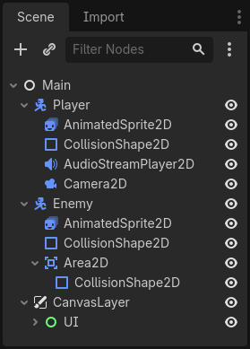
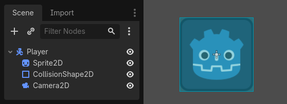
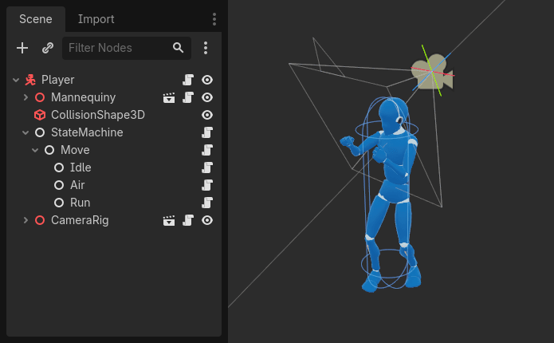
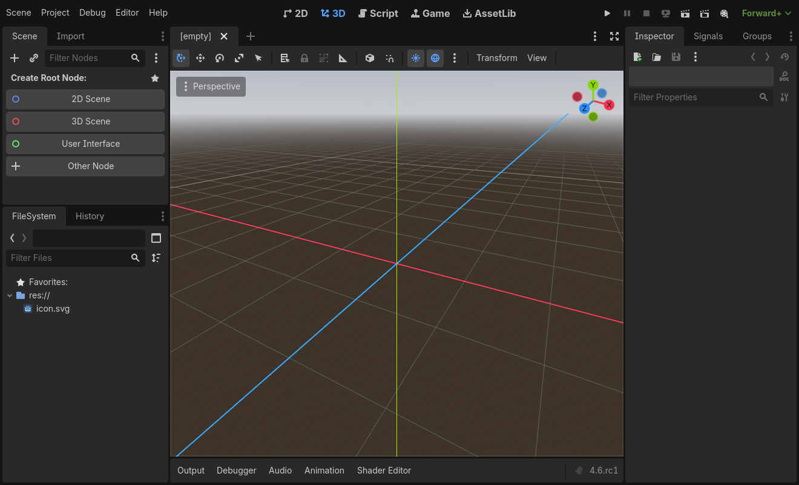
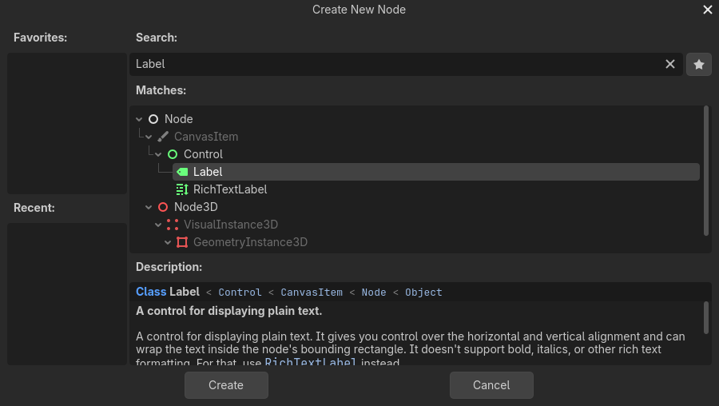
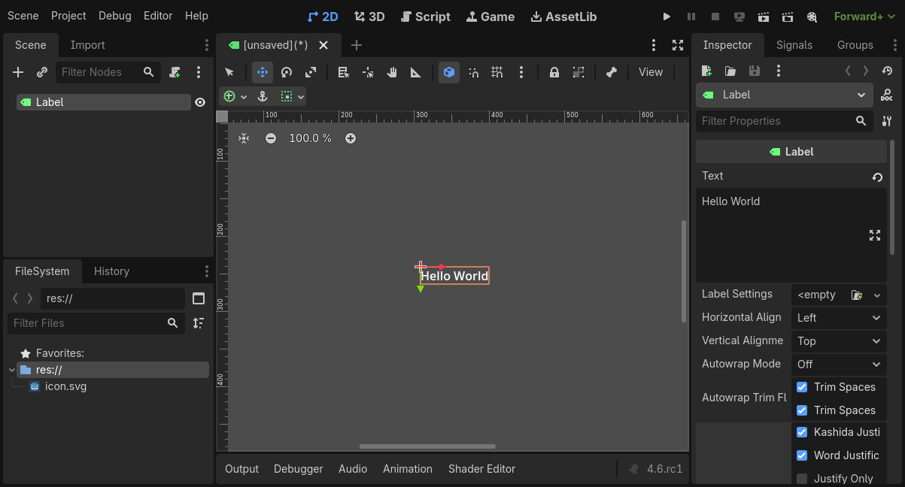
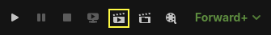
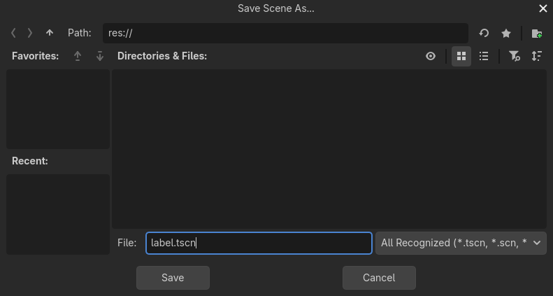
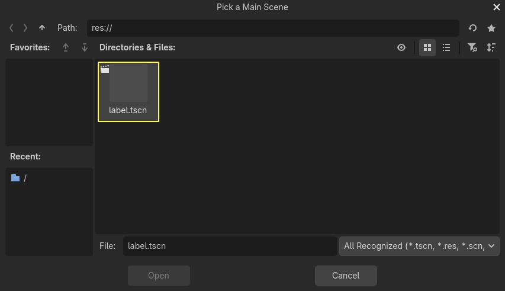

Nodes and Scenes
In Overview of Godot's key concepts, we saw that a Godot game is a tree of scenes and that each scene is a tree of nodes. In this lesson, we explain a bit more about them. You will also create your first scene.
Nodes
Nodes are the fundamental building blocks of your game. They are like the ingredients in a recipe. There are dozens of kinds that can display an image, play a sound, represent a camera, and much more.

All nodes have the following characteristics:
A name.
Editable properties.
They receive callbacks to update every frame.
You can extend them with new properties and functions.
You can add them to another node as a child.
The last characteristic is important. Together, nodes form a tree, which is a powerful feature to organize projects. Since different nodes have different functions, combining them produces more complex behavior. As we saw before, you can build a playable character that the camera follows using a CharacterBody2D node, a Sprite2D node, a Camera2D node, and a CollisionShape2D node.

Scenes
When you organize nodes in a tree, like our character, we call this construct a scene. Once saved, scenes work like new node types in the editor, where you can add them as a child of an existing node. In that case, the instance of the scene appears as a single node with its internals hidden.
Scenes allow you to structure your game's code however you want. You can compose nodes to create custom and complex node types, like a game character that runs and jumps, a life bar, a chest with which you can interact, and more.

The Godot editor essentially is a scene editor. It has plenty of tools for editing 2D and 3D scenes, as well as user interfaces. A Godot project can contain as many of these scenes as you need. The engine only requires one as your application's main scene. This is the scene Godot will first load when you or a player runs the game.
On top of acting like nodes, scenes have the following characteristics:
They always have one root node, like the "Player" in our example.
You can save them to your local drive and load them later.
You can create as many instances of a scene as you'd like. You could have five or ten characters in your game, created from your Character scene.
Creating your first scene
Let's create our first scene with a single node. To do so, you will need to create a new project first. After opening the project, you should see an empty editor.

In an empty scene, the Scene dock on the left shows several options to add a root node quickly. adds a Node2D node, adds a Node3D node, and adds a Control node. These presets are here for convenience; they are not mandatory. lets you select any node to be the root node. In an empty scene, is equivalent to pressing the button at the top-left of the Scene dock, which usually adds a new node as a child of the currently selected node.
We're going to add a single Label node to our scene. Its function is to draw text on the screen.
Press the button or to create a root node.

The Create New Node dialog opens, showing the long list of available nodes.

Select the Label node. You can type its name to filter down the list.

Click on the Label node to select it and click the button at the bottom of the window.

A lot happens when you add a scene's first node. The scene changes to the 2D workspace because Label is a 2D node type. The Label appears, selected, in the top-left corner of the viewport. The node appears in the Scene dock on the left, and the node's properties appear in the Inspector dock on the right.
Changing a node's properties
The next step is to change the Label's Text property. Let's change it to "Hello World".
Head to the Inspector dock on the right of the viewport. Click inside the field below the Text property and type "Hello World".

You will see the text draw in the viewport as you type.
See also
You can edit any property listed in the Inspector as we did with the Text. For a complete reference of the Inspector dock, see Inspector Dock.
You can move your Label node in the viewport by selecting the move tool in the toolbar.

With the Label selected, click and drag anywhere in the viewport to move it to the center of the view delimited by the rectangle.

Running the scene
Everything's ready to run the scene! Press the button in the top-right of the screen or press F6 (Cmd + R on macOS).

A popup invites you to save the scene, which is required to run it. Click the
button in the file browser to save it as label.tscn.

Note
The Save Scene As dialog, like other file dialogs in the editor, only
allows you to save files inside the project. The res:// path at
the top of the window represents the project's root directory and
stands for "resource path". For more information about file paths in
Godot, see File system.
The application should open in a new window and display the text "Hello World".

Close the window or press F8 (Cmd + . on macOS) to quit the running scene.
See also
See Game embedding for more information about the Game window that appears when running the project.
Setting the main scene
To run our test scene, we used the button. Another button next to it, , allows you to set and run the project's main scene. You can also press F5 (Cmd + B on macOS) to do so.

Note
Running the project's main scene is distinct from running the current scene. If you encounter unexpected behavior, check to ensure you are running the correct scene.
A popup window appears and invites you to select the main scene.

Click the button, and in the file dialog that appears, double
click on label.tscn.

The demo should run again. Moving forward, every time you run the project, Godot will use this scene as a starting point.
Note
The editor saves the main scene's path in a project.godot file in your project's directory. While you can edit this text file directly to change project settings, you can also use the window to do so. For more information, see Project Settings.
In the next part, we will discuss another key concept in games and in Godot: creating instances of a scene.